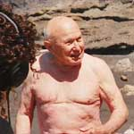
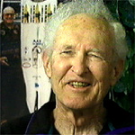
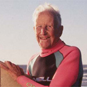

But a diversion the most common is upon the Water, where there is a very great Sea, and surf breaking on the Shore. The Men sometimes 20 or 30 go without the Swell of the Surf, & lay themselves flat upon an oval piece of plan about their Size and breadth, they keep their legs close on top of it, & their Arms are us'd to guide the plank, thye wait the time of the greatest Swell that sets on Shore, & altogether push forward with their Arms to keep on its top, it sends them in with a most astonishing Velocity, & the great art is to guide the plan so as always to keep it in a proper direction on the top of the Swell, & as it alters its direct. If the Swell drives him close to the rocks before he is overtaken by its break, he is much prais'd. On first seeing this very dangerous diversion I did not conceive it possible but that some of them must be dashed to mummy against the sharp rocks, but jus before they reach the shore, if they are very near, they quit their plank, & dive under till the Surf is broke, when the piece of plank is sent many yards by the force of the Surf from the beach. The greatest number are generally overtaken by the break of the swell, the force of which they avoid, diving and swimming under the water out of its impulse. By such like excercises, these men may be said to be almost amphibious. The Women could swim off to the Ship, & continue half a day in the Water, & afterwards return. The above diversion is only intended as an amusement, not a tryal of skill, & in a gentle swell that sets on must I conceive be very pleasant, at least they seem to feel a great pleasure in the motion which this Exercise gives.
| John H. "Doc" Ball, at age 94, was the oldest living American surfer when he passed away in December of 2001. | LeRoy "Granny" Grannis, 83 and a surfer for 67 years, was Doc Ball's best friend for over 70 years. | Woody Brown is 91 and lives in Maui, Hawai'i where he surfs every chance he gets. | Anona Napoleon, a 60-year-old native Hawaiian, has surfed for 50 years. |
|  |  |  |